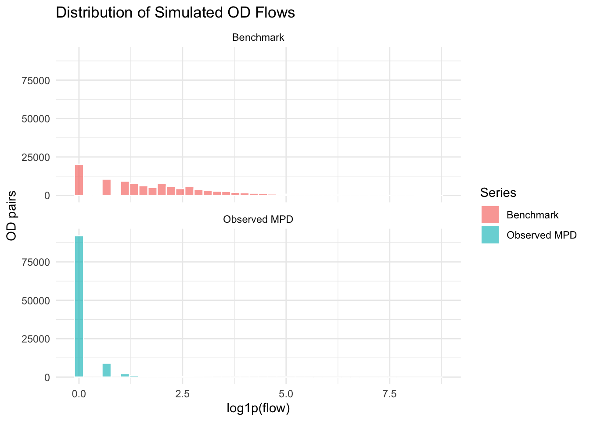
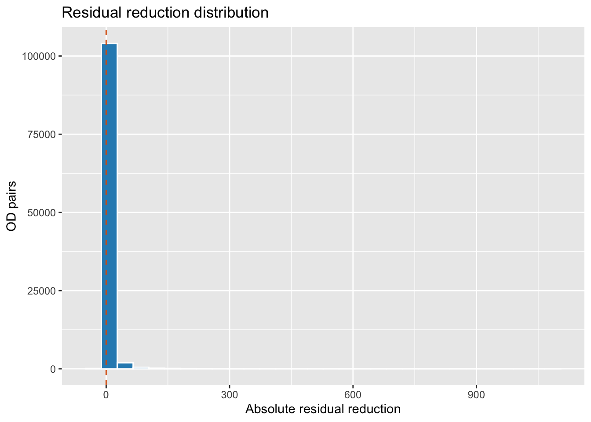
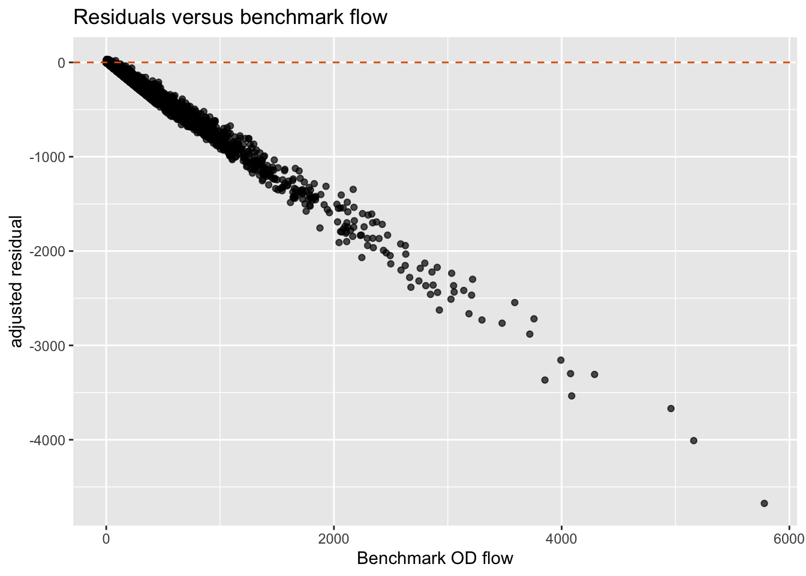
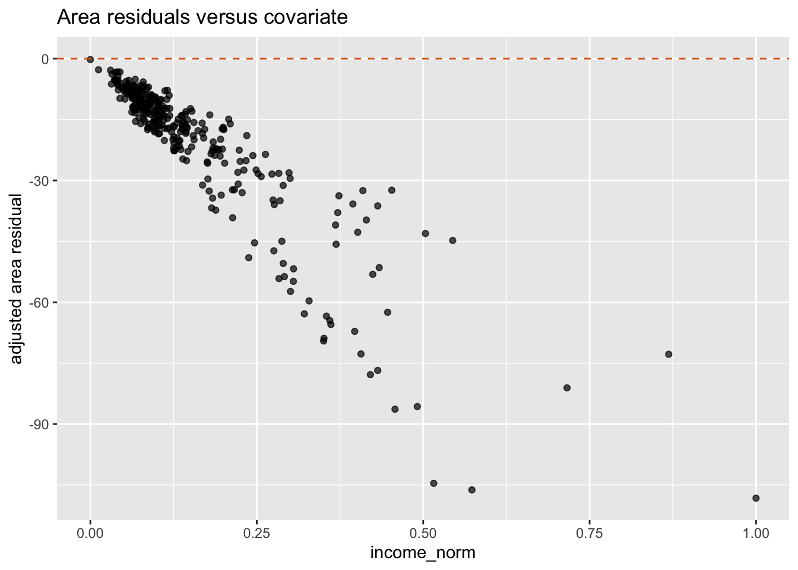
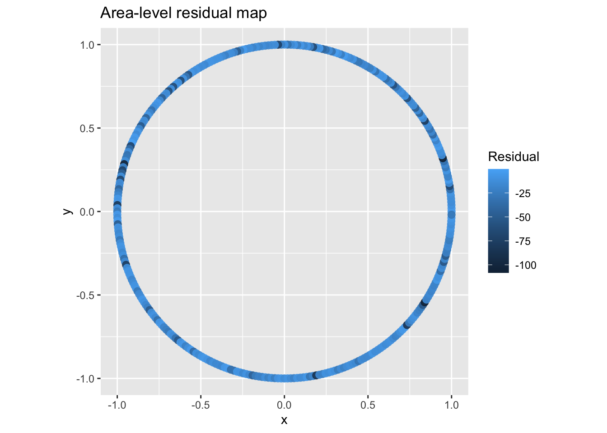

find_pkg_root <- function(path = getwd()) {
path <- normalizePath(path, mustWork = TRUE)
repeat {
if (file.exists(file.path(path, "DESCRIPTION"))) {
return(path)
}
parent <- dirname(path)
if (identical(parent, path)) {
stop("Could not find package root containing DESCRIPTION.")
}
path <- parent
}
}
pkg_root <- find_pkg_root()
setwd(pkg_root)
if (requireNamespace("devtools", quietly = TRUE)) {
devtools::load_all(pkg_root, quiet = TRUE)
} else {
library(debiasR)
}
library(dplyr)
library(tibble)
has_ggplot2 <- requireNamespace("ggplot2", quietly = TRUE)Stage 2 Validation Review Notebook
1 Purpose
This notebook runs the Stage 2 validation functions on the package’s simulated OD data so the implemented behavior can be reviewed in one place.
It covers:
validate_flow_overall()validate_flow_benchmark()legacy aliasvalidate_flow_pairs()validate_flow_all()legacy aliasvalidate_flow_residuals()validate_flow_residual_structure()validate_flow_distribution()
The notebook uses deterministic simulated data and lightweight deterministic adjustment methods. It does not run the Bayesian prototype.
2 Setup
data("simulated_mpd.od", package = "debiasR")
data("simulated_benchmark.od", package = "debiasR")
data("simulated_coverage", package = "debiasR")
data("simulated_covariates", package = "debiasR")
tibble(
dataset = c(
"simulated_mpd.od",
"simulated_benchmark.od",
"simulated_coverage",
"simulated_covariates"
),
rows = c(
nrow(simulated_mpd.od),
nrow(simulated_benchmark.od),
nrow(simulated_coverage),
nrow(simulated_covariates)
),
columns = c(
paste(names(simulated_mpd.od), collapse = ", "),
paste(names(simulated_benchmark.od), collapse = ", "),
paste(names(simulated_coverage), collapse = ", "),
paste(names(simulated_covariates), collapse = ", ")
)
)# A tibble: 4 × 3
dataset rows columns
<chr> <int> <chr>
1 simulated_mpd.od 107256 origin, destination, mpd_source, flow
2 simulated_benchmark.od 107256 origin, destination, flow
3 simulated_coverage 328 origin, destination, population, user_count, mp…
4 simulated_covariates 328 area, population, population_origin, population…3 Simulated Dataset Overview
The review uses four deterministic simulated datasets shipped with debiasR:
simulated_mpd.od: observed mobile-phone-derived OD flows. This is the biased flow table that adjustment methods start from.simulated_benchmark.od: benchmark OD flows used as the validation target.simulated_coverage: area-level population and active-user counts used by coverage-based adjustment methods.simulated_covariates: area-level contextual variables used by model-based adjustment and residual-structure diagnostics.
The flow datasets share the same origin and destination keys. The validation functions compare the observed MPD flow and each adjusted flow_adj against the benchmark flow.
flow_overview <- bind_rows(
simulated_mpd.od |>
transmute(series = "Observed MPD", flow = flow),
simulated_benchmark.od |>
transmute(series = "Benchmark", flow = flow)
)
flow_overview |>
group_by(series) |>
summarise(
n = n(),
total_flow = sum(flow, na.rm = TRUE),
zero_share = mean(flow == 0, na.rm = TRUE),
median_flow = median(flow, na.rm = TRUE),
mean_flow = mean(flow, na.rm = TRUE),
p90_flow = unname(quantile(flow, 0.90, na.rm = TRUE)),
p99_flow = unname(quantile(flow, 0.99, na.rm = TRUE)),
.groups = "drop"
)# A tibble: 2 × 8
series n total_flow zero_share median_flow mean_flow p90_flow p99_flow
<chr> <int> <dbl> <dbl> <dbl> <dbl> <dbl> <dbl>
1 Benchmark 107256 2665816 0.188 4 24.9 40 412
2 Observed… 107256 49709 0.858 0 0.463 1 8if (has_ggplot2) {
ggplot2::ggplot(
flow_overview,
ggplot2::aes(x = log1p(flow), fill = series)
) +
ggplot2::geom_histogram(
bins = 40,
alpha = 0.65,
position = "identity",
color = "white"
) +
ggplot2::facet_wrap(ggplot2::vars(series), ncol = 1) +
ggplot2::labs(
title = "Distribution of Simulated OD Flows",
x = "log1p(flow)",
y = "OD pairs",
fill = "Series"
) +
ggplot2::theme_minimal()
} else {
hist(
log1p(simulated_mpd.od$flow),
breaks = 40,
main = "Observed MPD OD flow distribution",
xlab = "log1p(flow)"
)
}
4 Build Review Inputs
Create a small set of adjusted-flow outputs. These are not intended to pick a winner; they provide method-labelled inputs for reviewing validation behavior.
adj_inverse <- adjust_inverse_penetration(
mpd_od_df = simulated_mpd.od,
coverage_df = simulated_coverage,
weight_by = "both"
)
adj_raking <- adjust_raking_ratio(
mpd_od_df = simulated_mpd.od,
benchmark_od_df = simulated_benchmark.od
)
adj_coefficient <- adjust_coefficient(
mpd_od_df = simulated_mpd.od,
benchmark_od_df = simulated_benchmark.od,
model_family = "ols",
level = "od"
)
adjusted_outputs <- list(
adjust_inverse_penetration = adj_inverse,
adjust_raking_ratio = adj_raking,
adjust_coefficient = adj_coefficient
)bind_rows(lapply(names(adjusted_outputs), function(method_name) {
adjusted_outputs[[method_name]] |>
summarise(
method = method_name,
n = n(),
total_mpd = sum(flow, na.rm = TRUE),
total_adjusted = sum(flow_adj, na.rm = TRUE),
min_adjusted = min(flow_adj, na.rm = TRUE),
max_adjusted = max(flow_adj, na.rm = TRUE)
)
}))# A tibble: 3 × 6
method n total_mpd total_adjusted min_adjusted max_adjusted
<chr> <int> <dbl> <dbl> <dbl> <dbl>
1 adjust_inverse_pene… 107256 49709 461483. 0 1291.
2 adjust_raking_ratio 107256 49709 2665816. 0 6171.
3 adjust_coefficient 107256 49709 1623692. 0 6696.5 Helper Inputs For Residual Structure
validate_flow_residual_structure() can compute Moran’s I if supplied a plain neighbour-link table. This review notebook creates a deterministic ring-neighbour structure from the simulated area names.
It also creates simple circular coordinates so the optional residual map plot can be inspected without adding spatial dependencies.
areas <- sort(unique(c(simulated_mpd.od$origin, simulated_mpd.od$destination)))
area_neighbors <- tibble(
area = areas,
neighbor = dplyr::lead(areas, default = areas[1])
) |>
bind_rows(tibble(
area = areas,
neighbor = dplyr::lag(areas, default = areas[length(areas)])
))
area_coordinates <- tibble(
area = areas,
angle = seq(0, 2 * pi, length.out = length(areas) + 1)[seq_along(areas)],
x = cos(angle),
y = sin(angle)
) |>
select(-angle)
area_neighbors |> slice_head(n = 10)# A tibble: 10 × 2
area neighbor
<chr> <chr>
1 Adur Allerdale
2 Allerdale Amber Valley
3 Amber Valley Arun
4 Arun Ashfield
5 Ashfield Ashford
6 Ashford Babergh
7 Babergh Barking and Dagenham
8 Barking and Dagenham Barnet
9 Barnet Barnsley
10 Barnsley Barrow-in-Furness 6 1. validate_flow_overall()
Review method-level fit summaries.
overall_results <- bind_rows(lapply(names(adjusted_outputs), function(method_name) {
res <- validate_flow_overall(
adj_df = adjusted_outputs[[method_name]],
benchmark_od_df = simulated_benchmark.od,
method_name = method_name,
return_joined = FALSE
)
tibble(
method = res$method,
n = res$n,
pearson_r = res$pearson_r,
spearman_rho = res$spearman_rho,
rmse = res$rmse,
mae = res$mae,
mape = res$mape,
ols_intercept = res$ols_intercept,
ols_slope = res$ols_slope,
r_squared = res$r_squared
)
}))
overall_results |>
arrange(desc(pearson_r))# A tibble: 3 × 10
method n pearson_r spearman_rho rmse mae mape ols_intercept ols_slope
<chr> <int> <dbl> <dbl> <dbl> <dbl> <dbl> <dbl> <dbl>
1 adjust… 15006 0.955 0.651 109. 71.5 4.20 -31.0 0.879
2 adjust… 15006 0.931 0.644 256. 96.3 0.843 -12.5 4.47
3 adjust… 15006 0.854 0.717 154. 63.3 2.08 19.5 0.973
# ℹ 1 more variable: r_squared <dbl>7 2. validate_flow_benchmark() Legacy Alias
Confirm the legacy alias still delegates to validate_flow_overall().
alias_overall <- validate_flow_benchmark(
adj_df = adj_inverse,
benchmark_od_df = simulated_benchmark.od,
method_name = "alias_check",
return_joined = FALSE
)
tibble(
alias_method = alias_overall$method,
alias_n = alias_overall$n,
alias_pearson_r = alias_overall$pearson_r
)# A tibble: 1 × 3
alias_method alias_n alias_pearson_r
<chr> <int> <dbl>
1 alias_check 15006 0.9318 3. validate_flow_pairs()
Review the joined OD-level comparison table.
pairs_inverse <- validate_flow_pairs(
adj_df = adj_inverse,
benchmark_od_df = simulated_benchmark.od
)
pairs_inverse |>
select(
origin,
destination,
mpd_flow,
adj_flow,
benchmark_flow,
diff_mpd_benchmark,
diff_mpd_adj,
diff_adj_benchmark
) |>
slice_head(n = 12)# A tibble: 12 × 8
origin destination mpd_flow adj_flow benchmark_flow diff_mpd_benchmark
<chr> <chr> <dbl> <dbl> <dbl> <dbl>
1 Adur Allerdale 0 0 2 -2
2 Adur Amber Valley 0 0 1 -1
3 Adur Arun 3 27.9 243 -240
4 Adur Ashfield 0 0 2 -2
5 Adur Ashford 0 0 0 0
6 Adur Babergh 0 0 0 0
7 Adur Barking and Dagen… 0 0 0 0
8 Adur Barnet 0 0 1 -1
9 Adur Barnsley 0 0 5 -5
10 Adur Barrow-in-Furness 0 0 0 0
11 Adur Basildon 0 0 0 0
12 Adur Basingstoke and D… 0 0 2 -2
# ℹ 2 more variables: diff_mpd_adj <dbl>, diff_adj_benchmark <dbl>9 4. validate_flow_all() Legacy Alias
Confirm the legacy row-level alias still delegates to validate_flow_pairs().
alias_pairs <- validate_flow_all(
adj_df = adj_inverse,
benchmark_od_df = simulated_benchmark.od
)
tibble(
identical_alias_output = identical(alias_pairs, pairs_inverse),
alias_rows = nrow(alias_pairs),
alias_columns = ncol(alias_pairs)
)# A tibble: 1 × 3
identical_alias_output alias_rows alias_columns
<lgl> <int> <int>
1 TRUE 107256 910 5. validate_flow_residuals()
Review OD-level residual reduction, raw-versus-adjusted outlier shares, and top-worst residual rows.
residual_results <- lapply(names(adjusted_outputs), function(method_name) {
validate_flow_residuals(
adj_df = adjusted_outputs[[method_name]],
benchmark_od_df = simulated_benchmark.od,
method_name = method_name,
top_n = 8
)
})
names(residual_results) <- names(adjusted_outputs)
residual_summary <- bind_rows(lapply(residual_results, `[[`, "summary"))
residual_summary |>
select(
method,
n,
mean_signed_residual_reduction,
median_signed_residual_reduction,
mean_abs_residual_reduction,
median_abs_residual_reduction,
share_improved,
share_worsened,
share_moved_in_benchmark_direction,
share_residual_mpd_over_2sd,
share_residual_adj_over_2sd,
reduction_share_residual_over_2sd
) |>
arrange(desc(share_improved))# A tibble: 3 × 12
method n mean_signed_residual…¹ median_signed_residu…²
<chr> <int> <dbl> <dbl>
1 adjust_inverse_penetrati… 107256 3.84 0
2 adjust_coefficient 107256 14.7 0
3 adjust_raking_ratio 107256 24.4 0
# ℹ abbreviated names: ¹mean_signed_residual_reduction,
# ²median_signed_residual_reduction
# ℹ 8 more variables: mean_abs_residual_reduction <dbl>,
# median_abs_residual_reduction <dbl>, share_improved <dbl>,
# share_worsened <dbl>, share_moved_in_benchmark_direction <dbl>,
# share_residual_mpd_over_2sd <dbl>, share_residual_adj_over_2sd <dbl>,
# reduction_share_residual_over_2sd <dbl>residual_results$adjust_inverse_penetration$data |>
select(
method,
origin,
destination,
mpd_flow,
adj_flow,
benchmark_flow,
signed_residual_reduction,
abs_residual_reduction,
moved_in_benchmark_direction,
improvement_flag
) |>
slice_head(n = 12)# A tibble: 12 × 10
method origin destination mpd_flow adj_flow benchmark_flow
<chr> <chr> <chr> <dbl> <dbl> <dbl>
1 adjust_inverse_penetrati… Adur Allerdale 0 0 2
2 adjust_inverse_penetrati… Adur Amber Vall… 0 0 1
3 adjust_inverse_penetrati… Adur Arun 3 27.9 243
4 adjust_inverse_penetrati… Adur Ashfield 0 0 2
5 adjust_inverse_penetrati… Adur Ashford 0 0 0
6 adjust_inverse_penetrati… Adur Babergh 0 0 0
7 adjust_inverse_penetrati… Adur Barking an… 0 0 0
8 adjust_inverse_penetrati… Adur Barnet 0 0 1
9 adjust_inverse_penetrati… Adur Barnsley 0 0 5
10 adjust_inverse_penetrati… Adur Barrow-in-… 0 0 0
11 adjust_inverse_penetrati… Adur Basildon 0 0 0
12 adjust_inverse_penetrati… Adur Basingstok… 0 0 2
# ℹ 4 more variables: signed_residual_reduction <dbl>,
# abs_residual_reduction <dbl>, moved_in_benchmark_direction <lgl>,
# improvement_flag <chr>residual_results$adjust_inverse_penetration$top_worst |>
select(
method,
origin,
destination,
mpd_flow,
adj_flow,
benchmark_flow,
abs_residual_adj_benchmark,
abs_residual_reduction,
improvement_flag
)# A tibble: 8 × 9
method origin destination mpd_flow adj_flow benchmark_flow
<chr> <chr> <chr> <dbl> <dbl> <dbl>
1 adjust_inverse_penetration Lambe… Wandsworth 121 1105. 5780
2 adjust_inverse_penetration Wands… Lambeth 126 1151. 5160
3 adjust_inverse_penetration Manch… Salford 205 1291. 4960
4 adjust_inverse_penetration Bourn… Dorset 64 553. 4088
5 adjust_inverse_penetration Birmi… Sandwell 43 486. 3853
6 adjust_inverse_penetration Lambe… Southwark 136 981. 4289
7 adjust_inverse_penetration Birmi… Solihull 88 779. 4078
8 adjust_inverse_penetration South… Lambeth 116 837. 3993
# ℹ 3 more variables: abs_residual_adj_benchmark <dbl>,
# abs_residual_reduction <dbl>, improvement_flag <chr>11 6. validate_flow_residual_structure()
Review residual structure for one method in detail.
structure_inverse <- validate_flow_residual_structure(
adj_df = adj_inverse,
benchmark_od_df = simulated_benchmark.od,
method_name = "adjust_inverse_penetration",
residual_type = "adjusted",
spatial_role = "origin",
residual_aggregation = "mean",
area_neighbors = area_neighbors,
covariate_df = simulated_covariates,
covariate_col = "income_norm",
geometry_df = area_coordinates,
x_col = "x",
y_col = "y",
make_plots = has_ggplot2
)
structure_inverse$summary# A tibble: 1 × 9
method residual_type spatial_role residual_aggregation n_od_pairs n_areas
<chr> <chr> <chr> <chr> <int> <int>
1 adjust_inv… adjusted origin mean 107256 328
# ℹ 3 more variables: pearson_residual_benchmark_flow <dbl>, moran_i <dbl>,
# pearson_residual_covariate <dbl>structure_inverse$flow_correlation# A tibble: 1 × 5
method residual_type comparison n pearson_r
<chr> <chr> <chr> <int> <dbl>
1 adjust_inverse_penetration adjusted benchmark_flow 107256 -0.995structure_inverse$moran_i# A tibble: 1 × 8
method residual_type spatial_role residual_aggregation n_areas_used
<chr> <chr> <chr> <chr> <int>
1 adjust_inverse_p… adjusted origin mean 328
# ℹ 3 more variables: n_links_used <int>, weight_sum <dbl>, moran_i <dbl>structure_inverse$covariate_correlation# A tibble: 1 × 6
method residual_type spatial_role covariate n pearson_r
<chr> <chr> <chr> <chr> <int> <dbl>
1 adjust_inverse_penetrati… adjusted origin income_n… 328 -0.898structure_inverse$area_level |>
arrange(desc(abs(selected_residual))) |>
slice_head(n = 12)# A tibble: 12 × 13
area method residual_type spatial_role residual_aggregation n_od_pairs
<chr> <chr> <chr> <chr> <chr> <int>
1 Birmingham adjus… adjusted origin mean 327
2 Wandsworth adjus… adjusted origin mean 327
3 Lambeth adjus… adjusted origin mean 327
4 Southwark adjus… adjusted origin mean 327
5 Tower Haml… adjus… adjusted origin mean 327
6 Manchester adjus… adjusted origin mean 327
7 Brent adjus… adjusted origin mean 327
8 Newham adjus… adjusted origin mean 327
9 Leeds adjus… adjusted origin mean 327
10 Ealing adjus… adjusted origin mean 327
11 Lewisham adjus… adjusted origin mean 327
12 Islington adjus… adjusted origin mean 327
# ℹ 7 more variables: selected_residual <dbl>, mean_residual <dbl>,
# sum_residual <dbl>, mean_abs_residual <dbl>, benchmark_flow_sum <dbl>,
# mpd_flow_sum <dbl>, adj_flow_sum <dbl>structure_inverse$map_data |>
arrange(desc(abs(selected_residual))) |>
select(area, selected_residual, mean_abs_residual, benchmark_flow_sum, x, y) |>
slice_head(n = 12)# A tibble: 12 × 6
area selected_residual mean_abs_residual benchmark_flow_sum x y
<chr> <dbl> <dbl> <dbl> <dbl> <dbl>
1 Birmi… -108. 108. 42078 0.947 0.320
2 Wands… -106. 106. 42588 0.839 -0.544
3 Lambe… -105. 105. 42007 -0.959 0.283
4 South… -86.3 86.3 36393 0.190 -0.982
5 Tower… -85.7 85.7 34278 0.734 -0.680
6 Manch… -81.1 81.1 35331 -0.999 0.0383
7 Brent -77.8 77.8 29603 0.839 0.544
8 Newham -76.8 76.8 30801 -0.947 -0.320
9 Leeds -72.8 72.8 29576 -0.969 0.246
10 Ealing -72.7 72.7 28345 -0.0383 0.999
11 Lewis… -69.5 69.5 27386 -0.982 0.190
12 Islin… -68.9 68.9 28621 -0.920 0.392 11.1 Optional Residual Structure Plots
These chunks show the plots returned by validate_flow_residual_structure() when ggplot2 is installed.
if (has_ggplot2) {
structure_inverse$plots$residual_reduction_distribution
} else {
"Install ggplot2 to review the residual-reduction distribution plot."
}
if (has_ggplot2) {
structure_inverse$plots$residual_vs_benchmark
} else {
"Install ggplot2 to review the residual-versus-benchmark plot."
}
if (has_ggplot2) {
structure_inverse$plots$residual_vs_covariate
} else {
"Install ggplot2 to review the residual-versus-covariate plot."
}
if (has_ggplot2) {
structure_inverse$plots$residual_map
} else {
"Install ggplot2 to review the coordinate residual map."
}
12 7. validate_flow_distribution()
Review origin-conditioned destination-share fidelity with KL divergence and Jensen-Shannon divergence.
distribution_results <- lapply(names(adjusted_outputs), function(method_name) {
validate_flow_distribution(
adj_df = adjusted_outputs[[method_name]],
benchmark_od_df = simulated_benchmark.od,
method_name = method_name,
weight_by = "benchmark_origin_total"
)
})
names(distribution_results) <- names(adjusted_outputs)
distribution_summary <- bind_rows(lapply(distribution_results, `[[`, "summary"))
distribution_summary |>
select(
method,
n_origins,
n_origins_used,
weight_by,
kl_mean,
kl_median,
kl_weighted_mean,
jsd_mean,
jsd_median,
jsd_weighted_mean
) |>
arrange(jsd_weighted_mean)# A tibble: 3 × 10
method n_origins n_origins_used weight_by kl_mean kl_median kl_weighted_mean
<chr> <int> <int> <chr> <dbl> <dbl> <dbl>
1 adjust_… 328 328 benchmar… 7.60 7.49 6.35
2 adjust_… 328 328 benchmar… 6.94 6.84 5.80
3 adjust_… 328 328 benchmar… 7.37 7.26 6.16
# ℹ 3 more variables: jsd_mean <dbl>, jsd_median <dbl>, jsd_weighted_mean <dbl>distribution_results$adjust_inverse_penetration$origin_level |>
arrange(desc(jsd_origin)) |>
slice_head(n = 12)# A tibble: 12 × 9
origin method n_destinations bench_origin_total adj_origin_total
<chr> <chr> <int> <dbl> <dbl>
1 Isles of Scilly adjus… 327 106 37.0
2 Torridge adjus… 327 2560 268.
3 North East Lincoln… adjus… 327 2998 449.
4 Darlington adjus… 327 2934 338.
5 Gosport adjus… 327 3251 372.
6 Melton adjus… 327 1971 262.
7 Eden adjus… 327 1482 239.
8 Isle of Wight adjus… 327 3152 565.
9 North Devon adjus… 327 3069 481.
10 Rutland adjus… 327 2400 357.
11 Gravesham adjus… 327 4626 531.
12 Boston adjus… 327 2217 196.
# ℹ 4 more variables: zero_benchmark_total <lgl>, zero_adj_total <lgl>,
# kl_origin <dbl>, jsd_origin <dbl>13 Combined Review Table
This table joins the main method-level Stage 2 summaries.
combined_review <- overall_results |>
select(method, pearson_r, rmse, mae, mape, r_squared) |>
left_join(
residual_summary |>
select(
method,
mean_abs_residual_reduction,
share_improved,
reduction_share_residual_over_2sd
),
by = "method"
) |>
left_join(
distribution_summary |>
select(method, kl_weighted_mean, jsd_weighted_mean),
by = "method"
) |>
arrange(desc(pearson_r))
combined_review# A tibble: 3 × 11
method pearson_r rmse mae mape r_squared mean_abs_residual_re…¹
<chr> <dbl> <dbl> <dbl> <dbl> <dbl> <dbl>
1 adjust_raking_ra… 0.955 109. 71.5 4.20 0.912 6.82
2 adjust_inverse_p… 0.931 256. 96.3 0.843 0.866 3.45
3 adjust_coefficie… 0.854 154. 63.3 2.08 0.730 8.04
# ℹ abbreviated name: ¹mean_abs_residual_reduction
# ℹ 4 more variables: share_improved <dbl>,
# reduction_share_residual_over_2sd <dbl>, kl_weighted_mean <dbl>,
# jsd_weighted_mean <dbl>14 Review Checklist
- Does
signed_residual_reductionread clearly as directional movement rather than guaranteed improvement? - Is
abs_residual_reductionthe right method-comparison field for “positive means better” residual reduction? - Are MPD and adjusted outlier shares both useful enough to keep in
validate_flow_residuals()? - Is the plain neighbour-link interface for Moran’s I transparent enough?
- Should optional plots remain inside
validate_flow_residual_structure()? - Are KL divergence and Jensen-Shannon divergence summaries clear enough for method comparison?